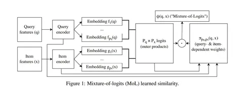

Сегодня обсуждаем статью от Microsoft и Meta* об эффективном retrieval с обучаемыми функциями близости. Исторически нишу функций близости в retrieval занимали косинусные близости — скалярные произведения над нормализованными векторами. Но в последнее время популярность стали набирать обучаемые функции близости. Например, они допускают сопоставление одному запросу нескольких эмбеддингов, чтобы лучше улавливать редкие и противоречивые интересы пользователей. Также можно использовать нейросети над векторами запроса и векторами айтема и делать многие другие интересные вещи. Однако с эффективностью этих решений есть проблемы.
Чтобы повысить эффективность обучаемых функций близости, в статье используют Mixture-of-Logits как универсальный аппроксиматор и предлагают методы его ускорения для получения достаточно точной аппроксимации топ-k соседей. В экспериментах подход авторов обгоняет бейслайны почти в 100 раз по времени работы и при этом достигает 99% полноты/рекола.
По сути обучаемые функции близости — это попытка повысить экспрессивность функции, моделирующей релевантность. В идеале у нас есть большая матрица релевантностей, где каждому запросу сопоставлена вероятность. При переходе к обучаемым эмбеддингам мы оцениваем релевантность как dot product и пытаемся оценить логарифм матрицы низкоранговым разложением.
Если изначальная матрица имела высокий ранг, мы не получим точного разложения. Простым решением является увеличение размерности эмбеддингов, но оно может привести к проблемам с памятью и оверфиту. А MoL позволяет аппроксимировать матрицу релевантности, сохранив ее ранг.
Также авторы предлагают методы ускорения этой конструкции: несколько вариаций алгоритмов, о которых можно узнать больше из полного текста статьи, и оптимизацию GPU-кернелов вкупе с использованием более масштабных датасетов, что сделает разницу между традиционными подходами и обучаемыми функциями близости ещё более выраженной.
@RecSysChannel
Разбор подготовил
—
Meta признана экстремистской организацией, а Facebook и Instagram запрещены на территории РФ
